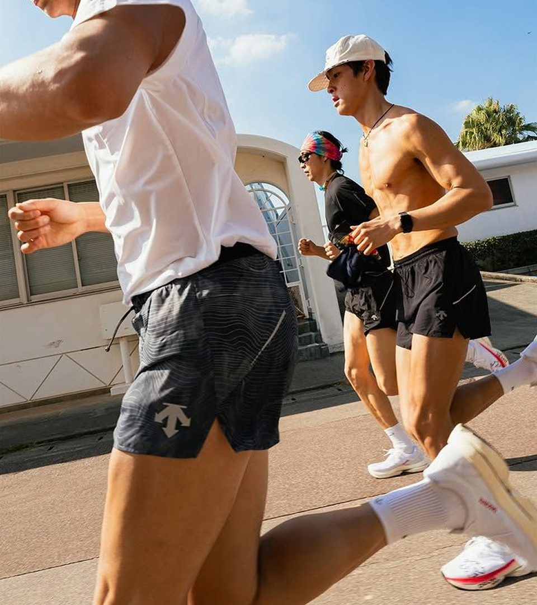
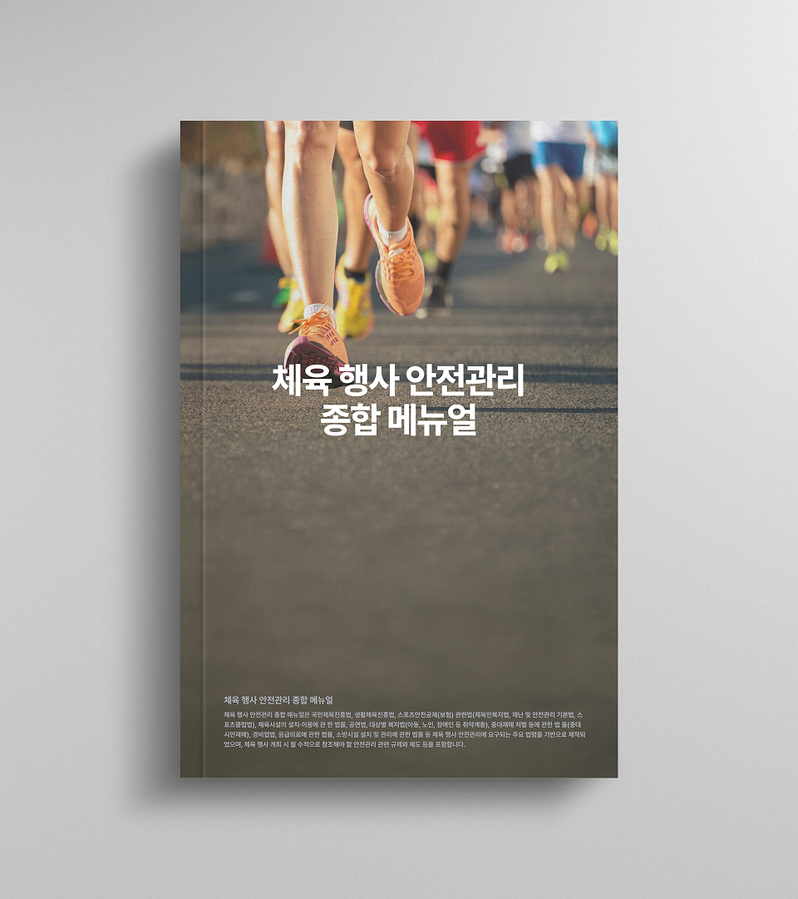

국민체육진흥법 시행령에 의해 체육 행사의 안전관리 계획/조치가 점검 완료된 전국의 모든 체육 행사를 안내드립니다.
안전한 체육 행사 정보를 제공합니다.
국민의 건강하고 안전한 체육 활동을 지원합니다.

1천명 이상의 규모 행사는 최근 다중인파 통제 및 안전사고 예방의 중요성이
크게 부각되고 있습니다. 이에 따라 주최 및 주관자는 개최 전·중·후에 걸쳐
종합적인 안전 관리체계를 갖추고 국민체육진흥법 시행령을 반드시 준수해야 합니다.
2020~2024년도 스포츠안전재단 '주최자배상책임공제' 계약 중
증권번호 관리 대상인 2022~2024년도 기간 내 발생한 사고 현황입니다.
※ 1천명 미만 민간/학교 체육행사 등 미포함. (2022~2024 발생 건 기준)

위 매뉴얼은 국민체육진흥법 및 스포츠안전공제 등 주요 법령(재난안전법, 중대재해처벌법 등)을
기반으로 체육 행사 안전관리에 요구되는 핵심 기준을 담아 제작되었습니다.
행사 개최 시 필수적으로 참조해야 할 안전 규제와 제도를 모두 포함합니다.